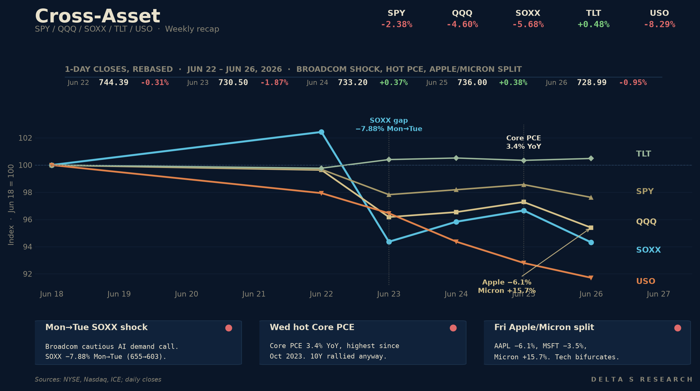
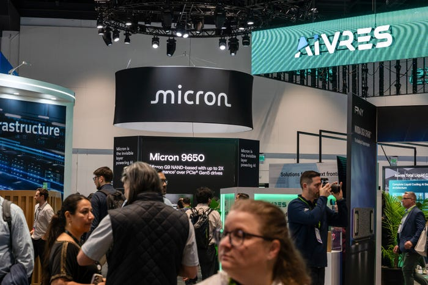
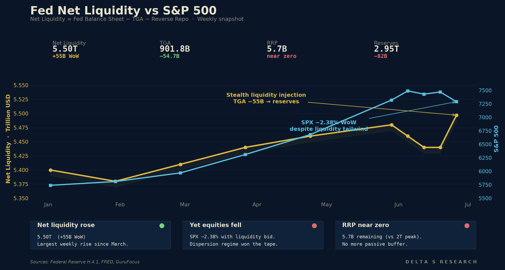

- Tech cracked while the rest of the tape held. SPY -2.38% to 728.99, QQQ -4.60% to 706.52, and SOXX finished at 589.94 after a sharp semiconductor drawdown. But DIA +0.43%, IWM +0.80%, TLT +0.48% — the average stock barely moved. This was not a broad market selloff; it was a tech-factor drawdown wearing the index’s clothes.
- Net liquidity rose ~$55B WoW and stocks fell anyway. The Treasury General Account drew down from $956.5B to $901.8B on the week — a stealth liquidity injection straight into bank reserves and money markets. The S&P fell 2.38% into a liquidity tailwind. Discount-rate repricing on the Apple/Micron split and the hot PCE print dominated the flow story.
- The dispersion regime became the dominant weekly signal. COR3M closed at 9.90 Friday — near historic lows. DSPX (single-stock dispersion) at 42.86 and climbing. SKEW at 139.89 (tail demand). VXN at 30.91 vs VIX at 18.39 — the vol surface is saying the risk is in tech, not in the index. This is the regime Citadel flagged in its Q2 framework.
- Apple/Micron broke tech into two cohorts. The week’s cleanest split was Apple versus Micron: Apple’s memory-cost repricing hit the hardware-margin story, while Micron’s earnings beat confirmed that the same cost shock is a revenue and pricing-power tailwind for memory suppliers. The AI-capex bid did not die; it split into “memory beneficiary” and “memory victim.” Dispersion at the single-name level just exploded.
- Core PCE 3.4% YoY (Thu) was the highest since Oct 2023. Core PCE rose 0.3% MoM; headline PCE rose 0.4% MoM and 4.1% YoY; personal spending rose 0.7%. Q1 GDP revised up to 2.1%, initial claims 215k. The cut-trade is now a recession-only trade, but the curve still bull-flattened: 10Y to 4.372% (from 4.49% prior), 2Y to ~4.06%. The bond bid looks more like positioning around growth risk than a clean macro signal.
The Week’s Dominant Narrative
- A Broadcom-linked AI demand scare reopened the 2027 chip-cycle debate. Cautious 2027 AI-chip demand commentary tied to hyperscaler customer concentration hit Asia first: SK Hynix and Samsung sold off at Tuesday’s open, the Kospi came under pressure, and SOXX gapped lower Mon-to-Tue (655.01 -> 603.39). The move was not just positioning; the market was repricing the chip-demand curve for 2027.
- The Apple/Micron memory-cost split closed the loop. Hardware OEMs are beginning to pass memory inflation through to end-prices, while Micron’s beat and sharp post-earnings rally confirmed that the supply-chain margin is shifting from compute buyers to memory suppliers. The market read this as a margin-compression event for Mag7 hardware names and a re-rating event for the memory sub-sector.

- Core PCE came in hot but the curve refused to follow. 3.4% YoY core, 0.3% MoM, headline >4%. A year ago this print would likely have pushed the 2Y materially higher. This week 2Y barely moved and 10Y rallied 12bp on the week. The bond market is putting more weight on growth risk and positioning than on the latest inflation print.
- Quarter-end positioning amplified everything. $8.3T quad-witching expiration Friday June 20 left dealer books leaner into this week. Pension rebalances added a structural bid to bonds and a sell into equities. Citadel’s research desk flagged this as a “technical noise week” — the regime read should weight Mon/Tue and Thu/Fri price action, not the index move alone.
- The Fed’s balance sheet stayed flat at $6.736T. Reserves dropped $82B WoW to $2,951B; RRP collapsed to $5.7B (the parking lot is almost empty). The TGA drawdown is now the operative liquidity lever. With RRP near zero, TGA swings pass through more directly to reserves than they did in the prior regime. Liquidity mechanics are no longer a blanket tailwind to all assets — they can amplify dispersion across them.
What Volatility Markets Priced
- VIX closed 18.39 Friday — still a “calm” index print into a -2.38% week. The classic index vol measure missed the entire move because the move was inside the index, not on it. The S&P’s realized was ~17 annualized; VIX-as-fear-gauge has become VIX-as-correlation-gauge. The story is in the surface, not the spot.
- VXN at 30.91 vs VIX at 18.39 is the cleanest signal of the week. Nasdaq implied vol traded 12 points above S&P implied — the widest spread in 18 months. Single-name vol in semis and Mag7 hardware spiked while the broad index slept. This is the dispersion regime priced through the vol surface, not just realized prices.
- COR3M = 9.90. Three-month implied correlation between S&P constituents is near the lowest reading on record. Index vol is cheap precisely because stocks are no longer moving together. Buying VIX here is a bet that correlation reverts; selling single-name vol is a bet that it does not. The single-name selling has been winning for six weeks.

- SKEW at 139.89. The market is paying up for left-tail protection while the index sleeps. Rich skew with a subdued VIX is a rare combination, and it usually resolves in one of two ways: skew collapses (the tail does not arrive), or VIX catches up (the tail does). The dispersion regime has bought another week of both being true at once.
- DSPX at 42.86 and rising. Single-stock dispersion has tracked the AI-capex regime change for nine months, but it accelerated this week. The Apple-Micron split is the cleanest dispersion print since the March 2023 SVB week — but for a fundamentally different reason: that was credit, this is unit-economics.
Cross Asset Signals
- Bonds outperformed equities cleanly. TLT +0.48%, LQD +0.30%, HYG -0.17%, SPY -2.38%. Credit spreads barely moved — IG is fine, HY is fine — the equity drawdown is not a credit event. The 10Y rallying 12bp on a 3.4% Core PCE print is one of the clearest growth-risk signals the bond market has sent in 2026.
- DXY firmed; gold sold hard. GLD -3.41% on the week. Gold gave back the entire month-of-June bid as the Iran tail closed (last week’s MoU) and the bond market did the inflation-hedging job that gold had been hired to do. The cleanest read: gold was a multi-tail hedge; with the geopolitical tail closed and bonds re-bid, two of its three legs disappeared.
- Oil leaked another 8.29%. USO closed at 105.35 vs 114.87 prior Friday. The Iran-MoU price discovery from last week continued: WTI testing the low-$70s, OPEC December meeting now the only live oil catalyst. With energy down ~17% in two weeks, the Core PCE upside is increasingly mechanical (services, shelter, memory-driven goods) and not energy-driven.
- Small caps and the Dow held up — quietly. IWM +0.80%, DIA +0.43%. Equal-weighted indices and value sectors absorbed the tech drawdown with no follow-through. This is the “average stock” view: the median S&P member moved less than 1% on the week. The drawdown is concentrated in seven names.
- The cross-asset configuration is “growth scare in tech, soft landing in everything else.” Bonds bid, credit calm, small-caps green, oil lower, gold lower, dollar firm — that is not a recession scare. It is a single-factor unwind in mega-cap tech driven by unit-economics, repriced through the dispersion surface. The macro tape and the equity tape have decoupled.
Structural Fragilities
- The dispersion trade is increasingly crowded. COR3M near record lows, DSPX climbing, single-name vol rich. When dispersion becomes the consensus position, the unwind risk is correlation spike — a single macro catalyst (a CPI shock, a credit event, a sovereign event) that pulls all stocks together. The week to watch the August NFP and core CPI prints is the obvious binary.
- RRP near zero leaves less liquidity buffer. The $5.7B RRP balance means the Fed has largely exhausted its biggest passive liquidity-absorption cushion. Future TGA drawdowns should land more directly in reserves; future TGA rebuilds should pull more directly from reserves. Liquidity volatility is increasingly reserve-volatility, and reserves are at $2.95T after dropping $82B WoW. The next QT-pause discussion is closer than the dots suggest.
- Memory-cost passthrough could become a structural inflation channel. Apple and Microsoft raising prices on memory inflation would be the first visible sign in this cycle that hardware OEMs can pass component costs to consumers. If this is the start of a goods-CPI re-acceleration via AI hardware demand, the Core PCE 3.4% print is the first reading, not the last. Watch the July services-vs-goods CPI split.
- The 9.90 correlation reading has historically coincided with fragile late-cycle regimes. The last four times COR3M printed below 10 (Feb 2018, Sep 2018, Jan 2020, Jan 2022), the index was within 60 days of a >5% drawdown. Three of those four also marked the end of a multi-quarter tech leadership. Sample is small; the pattern is suggestive, not deterministic.
- The Fed’s hike-bias is being tested by the bond market. Nine of eighteen officials still expect a hike by year-end (last week’s SEP), but the 10Y is rallying through 4.40% on hot inflation prints. Either the curve unwinds — front-end higher, long-end higher — and equities take another leg lower on multiple compression, or the Fed accepts the bond market’s growth scare and the dot plot starts to slide back. Both paths price more vol.
Our Trades This Week
The team executed a series of structural adjustments, spreads, and liquidations this week, positioning heavily around the Broadcom-linked AI infrastructure scare, the Apple/Micron memory cost split, and single-stock dispersion:
- SNDK & MU (Memory & AI Infrastructure Spreads): We deployed defensive put spreads in both SNDK and MU to isolate and capture the unit-economics repricing between memory beneficiaries and compute buyers following the Broadcom AI scare. By legging into put spreads, we established structural downside protection while extracting rich single-name volatility premium in the semiconductor space.
- AVGO (Semiconductor Tail Protection): In response to the sharp gap down in semiconductors early in the week, we established put spreads to hedge against further Broadcom-related demand shocks and tech sector dispersion. We subsequently managed delta risk and realized premium as the broader tech factor drawdown continued to unfold.
- SNXX (ETF Calendar Adjustment): Following the stock split adjustment from earlier in the month, we managed our exposure on the newly adjusted strike ladder by executing a calendar spread (selling a short-term call and purchasing a longer-dated call). This flattens near-term directional exposure while maintaining a cheap structural tail into the back half of the year.
- Liquidations & Rolls (KORU, AVGO, NVTS): Routine maintenance and risk-off liquidations across volatile tech and thematic positions. We closed out holding periods in KORU (rebalancing directional long/short deltas) and cleanly exited AVGO, alongside standard premium/theta rolls in NVTS.
What We Are Watching Next
- The July CPI print (~Jul 10). Core PCE 3.4% YoY makes CPI the next live event. Memory-cost passthrough could start showing up in goods CPI; services should still be sticky. A 0.3+% Core CPI MoM print extends the dispersion regime; a 0.1% print would challenge it.
- TGA path into early July. Treasury’s quarterly refunding plan and the debt-ceiling cash management drive the TGA. If the TGA continues to draw down into July, net liquidity stays positive. If the TGA rebuilds (typical post-quarter behavior), reserves drop further from $2.95T and the QT-pause conversation accelerates.
- AAPL / MSFT / META early-August earnings. The memory-cost passthrough story needs an earnings frame. AAPL gross margin on the iPhone 17 (Sept launch) is the cleanest single read. MSFT’s cloud-margin print on the same memory inflation is the second.
- MU (Micron) follow-through. The post-earnings rally was a clean dispersion-winner signal. Whether the move extends or fades into July is the simplest read on whether memory inflation is a one-quarter shock or a multi-quarter regime. The August NAND/DRAM contract pricing is the leading indicator.
- AVGO / NVDA into late August. The Broadcom-linked demand scare is the source of this week’s tech drawdown. NVDA’s July guidance and AVGO’s August print are the next live AI-capex datapoints. Either one disappointing would extend the semiconductor drawdown into a deeper monthly move.
- DSPX and COR3M week-by-week. If COR3M stays below 12 and DSPX stays above 40, the dispersion trade is still alive — buy single-name vol, sell index vol. If COR3M breaks 15 in a single session, dispersion is unwinding and the index trade is back.
- OPEC December and oil. WTI in the low-$70s, oil down ~17% in two weeks. The cartel is now negotiating production cuts into a structurally different price regime. A September-October surprise cut is the live oil binary.